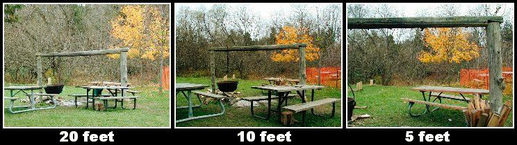
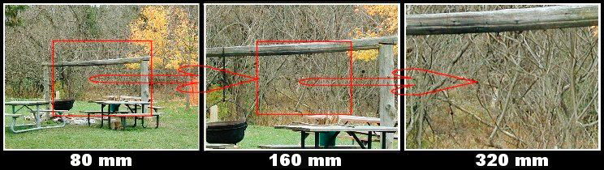

|
Composition in the Field for the Art PhotographerVersion 1.1, Page 5, ©2001 by Dale Cotton, all rights reserved Angle of view vs. PerspectiveIt's easy to get a bit rusty on optics and theory from time to time so a quick review of two simple but often-confused aspects may not hurt:
Figure 4. Diminishment We all know that things of the same size appear smaller the farther they are from our eyes. In figure 4 the fence posts are all the same size in reality but not in the picture. Figure 4 is taken from the perspective of the point in space at which the film frame within the camera was located at that instant.  Figure 5. Differing Perspectives Of the three shots shown in Figure 5:
The reason we know that the above details are true is because of the change in relative sizes of objects when compressed from three dimensions into the two dimensions of a picture*. Notice how the crossbeam and picnic tables grow in size in comparizon to the background trees. Notice how the crossbeam stays roughly the same size in the 20 feet and 10 feet shots but the picnic tables in front of it change dramatically in size. Notice how the amount of yellow tree under the crossbeam dramatically changes in each of the three shots. These are changes in perspective. If I had stayed at 20 feet but moved to left or right my perspective would also have changed.  Figure 6. Differing Angles of View Figure 6 takes the opposite tack. Here I stay at the original 20 feet but double then re-double the focal length. Notice how the amount of yellow tree showing under the crossbeam remains exactly the same from 80 mm to 160 mm. When looking in a given direction from any given position in the world, the perspective remains the same regardless of the lens or focal length used (perhaps barring the distortions of fish-eyes!). The red rectangle inside the 80 mm shot shows how it can be cropped to achieve exactly the same picture as the 160 mm shot; ditto from 160 mm to 320 mm. There is no such relationship between the three shots of figure 5. Which leads us to the moral of the angle of view vs. perspective story: Even with a zoom lens you still have to walk closer in or farther back to leverage perspective. From time to time you will hear of a long-time prime lens user who throws in the towel, replaces his primes with zooms, uses them for a time, then switches back to primes. He complains that the zooms made him lazy, so that he didn't get as good compositions as he used to with primes. The zooms were not the problem. The real problem is that they didn't come with decals with the above warning plastered all over them. |
| - 5 - |